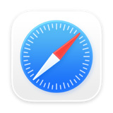
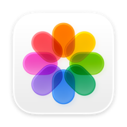
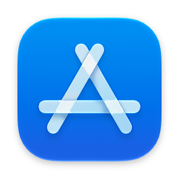
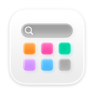
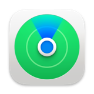
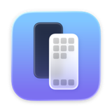
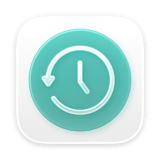

Mac 新手上手分享包
從開機到會用，12 個章節・從第 01 章開始，一章一件事
第 01 章共 12 章
開機第一次要做的事
新的 Mac 第一次開機會跑一段「設定輔助程式」，一路照著螢幕指示回答就好。這一章告訴你哪幾個選項真的重要、哪些可以先跳過。
一定要做的三件事
這三件會影響你之後每天怎麼用這台電腦，其他選項都可以之後再說。
- 連上 Wi-Fi 後面登入 Apple 帳號、下載 App、同步照片都需要網路。在門市已經連好的話，回家記得再連一次家裡的 Wi-Fi：點右上角的 Wi-Fi 圖示，選你家的網路名稱，輸入密碼就好。
- 登入 Apple 帳號 就是你 iPhone 上用的那一組。登入之後，備忘錄、行事曆、照片、密碼才會和手機同一份。如果不確定密碼，先拿 iPhone 出來確認，不要臨時新辦一組：辦了新的，你手機上的東西就不會同步過來。
- 設定登入密碼，和 Touch ID（有的機型才有） 如果你的 Mac 有 Touch ID，它就是指紋，用來解鎖、安裝 App、線上付款，可以錄多隻手指。登入密碼則是最後一道防線，一定要記得：忘記登入密碼是最麻煩的狀況，重設的方法有限，資料也可能拿不回來。
可以先跳過、之後再開的
這三個在設定過程中也會問你，跳過完全不影響使用，之後想開隨時都能開。
螢幕使用時間
統計你每天用了多久、用在哪些 App。純粹是紀錄，不影響任何功能。
Apple 服務試用
音樂、雲端空間之類的免費試用。先跳過不會少東西，需要時再從 App 裡面訂閱。
深色或淺色外觀
只是外觀。之後在「系統設定」的「外觀」裡隨時能換，也可以設成跟著日夜自動切換。
設定完，先做一次系統更新
新機出廠時裝的系統版本，通常不是最新的。這一步做完，後面遇到的怪問題會少很多，所以建議拿到電腦當天就做。
打開「系統設定」，走這條路徑：
系統設定 › 一般 › 軟體更新
有更新就裝。過程中把電源接著、不要闔上螢幕，讓它自己跑完。
更新中途請勿強制關機。畫面停在進度條看似暫停，其實系統仍在處理中，安裝大版本更新有時候需要 30 分鐘以上。想確認進度，看進度條下方的剩餘時間文字是否有更新。
做完打勾・第 01 章
第 02 章共 12 章
認識你的桌面
Mac 的畫面只有三個固定區域：最上面一條、最下面一排、中間一大片。搞懂這三塊，就不會有「東西不見了」的感覺。
最上面那條：選單列
很多人從 Windows 換過來，第一個不習慣的就是這裡：Mac 的功能表不在視窗裡面，而是永遠固定在螢幕最上方。
- 左上角的蘋果圖示 關機、重新開機、鎖定螢幕、「關於這台 Mac」、還有「系統設定」都在這裡。不管你正在用哪個 App，按它都有效。
- 蘋果圖示右邊那一排文字 會跟著你現在用的 App 改變。你在用 Safari 它就寫 Safari，切到郵件它就變成郵件。想找某個 App 的功能，先看這一排，通常都在裡面，而不是在視窗上。
- 右上角的小圖示 Wi-Fi、音量、電池、時間。點那個像兩個滑桿疊在一起的圖示會打開「控制中心」，亮度、音量、藍牙、螢幕鏡像輸出都在裡面。
最下面那排：Dock
放常用 App 的地方，等於 Windows 的工作列。圖示下面出現一個小點，代表這個 App 現在正在執行中。
要留在 Dock 上：把 App 圖示拖到 Dock 上放手。
要移除：從 Dock 往桌面中間拖出去放手。這只是移除捷徑，App 本身還在電腦裡。
中間那一大片：桌面
可以放檔案，但別把它當倉庫。桌面東西一多，畫面變亂、找檔案也更難。建議的習慣是：桌面只放今天在處理的東西，其他丟進「文件」或 iCloud 雲碟。已經堆滿了也有救，第 12 章有一個三分鐘清桌面的做法。
這幾個圖示先認得
Dock 上預設就有這些，是最常用到的幾個。




做完打勾・第 02 章
第 03 章共 12 章
App 放在哪、怎麼找
Mac 上找 App 有三條路。最快的那條是打字搜尋，不是用滑鼠慢慢翻。
方法一：打字搜尋，最快
按 Command + 空白鍵（Command 是空白鍵兩側印著 ⌘ 的那顆鍵），畫面中間會跳出一個搜尋框。直接打 App 名字的前幾個字，通常打兩三個字它就找到了，按 Return（鍵盤右側印著 return 的那顆）就開。
這招不只找 App，也能找檔案、找信件、算數學（直接打 128*7）、查單字、查匯率。學會這一個，很多事都不用另外學。
方法二：看全部已安裝的 App
Dock 上有一個由多個小方格組成的圖示，點它會展開這台 Mac 上所有的 App。適合「我知道有裝，但想不起來叫什麼名字」的時候。
方法三：從 Finder 的「應用程式」進去
點 Dock 最左邊的 Finder，左側清單選「應用程式」。這裡是 App 實際存放的檔案夾，要刪除 App 的時候會用到。
Finder › 應用程式
以前這個功能叫「啟動台」（Launchpad）。在這個版本的 macOS 上，它已經換成新的 App 總覽，名稱就叫「App」。你在網路上看到的舊教學寫「啟動台」，指的就是它。
常被問到「這個在哪」的幾個 App
這些都是系統內建的，不用另外安裝，用上面任何一種方法都找得到。

做完打勾・第 03 章
第 04 章共 12 章
把舊電腦的資料搬過來
不用一個一個複製。Mac 內建「系統移轉輔助程式」，可以把舊電腦的檔案、帳號、甚至部分設定整批搬過來。
搬之前先準備好三件事
- 兩台電腦連同一個 Wi-Fi 不同網路會找不到對方。如果兩台都能接網路線到同一台路由器，那更好，速度快很多。
- 兩台都接上電源 搬到一半沒電是最常見的失敗原因，而且中斷之後常常要整個重來。
- 留足夠的時間 資料量大的話，幾個小時是正常的。開始之後就讓它自己跑，不要闔上螢幕、不要中途去操作電腦。建議睡前開始跑。

從舊的 Mac 搬
兩台 Mac 都打開「系統移轉輔助程式」（用 Command + 空白鍵 打「移轉」就找得到）。
- 新 Mac 選「從 Mac、時光機或啟動磁碟」 意思是：我要接收資料。
- 舊 Mac 選「至另一部 Mac」 意思是：我要送出資料。
- 核對兩邊的密碼一不一樣 畫面上會出現一組相同的密碼，確認兩台顯示的一樣才按開始。這是在確保你連到的是自己的電腦，不是隔壁的。
從 Windows 電腦搬
Windows 那邊要先裝 Apple 提供的「Windows 系統移轉輔助程式」，Mac 才看得到它。到 Apple 官方支援網站下載對應你 Mac 系統版本的那一支，安裝後執行，再回到 Mac 上開「系統移轉輔助程式」選「從 Windows PC」。和 Mac 搬 Mac 不一樣，這時是 Mac 畫面上出現一組代碼，要在 Windows 電腦上輸入。開始前兩台都打開 Wi-Fi 和藍牙、放在旁邊，並先暫時關掉防毒軟體和防火牆，比較不會搬到一半斷掉。
文件、照片、音樂、瀏覽器書籤、使用者帳號這些會搬過來。但 Windows 上安裝的軟體不會，要在 Mac 這邊重新安裝一次，多數常用軟體都有 Mac 版。
如果當下沒搬，之後還能搬嗎
可以。「系統移轉輔助程式」隨時都能再執行一次，不限第一次開機。只是新 Mac 用久了以後再搬，比較容易出現重複的檔案，所以能早搬就早搬。
做完打勾・第 04 章
第 05 章共 12 章
觸控式軌跡板手勢
Mac 的觸控式軌跡板不是拿來代替滑鼠的，是多了好幾隻手。這六個手勢學會，操作速度差很多。
先學這三個
這三個每天都會用到，練熟了操作就順了。
- 兩指上下滑：捲動頁面 方向和你在 iPhone 上滑一樣，內容跟著手指走。如果覺得方向反了，可以到「系統設定 › 觸控式軌跡板 › 捲動與縮放」改成相反方向。
- 兩指點一下：等於按右鍵 Mac 的觸控式軌跡板沒有分左右鍵。要叫出「拷貝、重新命名、丟到垃圾桶」那個選單，就用兩隻手指一起點一下。這是從 Windows 換過來最需要重新習慣的一個。
- 兩指捏合或張開：縮放 看照片、看 PDF、覺得網頁字太小的時候用，和手機上的操作一樣。
再學這三個，換視窗會快很多
等上面三個變成反射動作了，再回來練這一組。
- 四指往上滑：看到所有開著的視窗 視窗開太多、找不到剛才那個的時候用。這個畫面叫「指揮中心」，點你要的那個視窗就會切過去。四隻手指一起往上滑，想改成三指的話，到「系統設定 › 觸控式軌跡板 › 更多手勢」裡把「指揮中心」換成「用三指向上滑動」。
- 四指左右滑：切換全螢幕的 App 當你把某個 App 放到全螢幕，就用這個手勢左右切換，不用先縮小再放大。
- 拇指加三指捏合或張開 捏合會打開 App 總覽（就是舊教學說的「啟動台」）；反過來張開，所有視窗會讓到旁邊讓你看到桌面。
設定裡有動畫示範，比看文字快
選到某個手勢時，上方會播動畫，示範這個手勢怎麼做。
系統設定 › 觸控式軌跡板
上方有三個分頁：點按、捲動與縮放、更多手勢。想調整或關掉某個手勢也在這裡。
做完打勾・第 05 章
第 06 章共 12 章
最常用的快速鍵
Windows 上按 Ctrl 的地方，Mac 幾乎都改成按 Command。這個對應關係換掉，你的舊習慣大部分都能用。
從 Windows 換過來，先看這張對照表
鍵盤上這四個符號代表什麼
Mac 的快速鍵說明常常直接印符號，先認得它們對應哪一顆鍵。
⌘ Command
空白鍵左右兩側各一顆。最常用的一顆，取代 Windows 的 Ctrl。
⌥ Option
Command 外側，鍵上印著 option（舊款或外接鍵盤可能寫 alt）。用來叫出隱藏選項。
⇧ Shift
和其他鍵盤一樣，切換大寫、加選一整個範圍。
⌃ Control
左下角，在 fn 旁邊。Mac 上比較少單獨使用。
每天都會用到的
| 按鍵 | 做什麼 |
|---|---|
| Command + C | 拷貝 |
| Command + V | 貼上 |
| Command + X | 剪下文字（檔案不能用這組） |
| Command + Z | 復原上一步 |
| Command + S | 儲存 |
| Command + F | 在這一頁裡找字 |
| Command + W | 關掉這個視窗 |
| Command + Q | 結束這個 App |
找東西與切換
| 按鍵 | 做什麼 |
|---|---|
| Command + 空白鍵 | 叫出搜尋框，找 App、找檔案 |
| Command + Tab | 切換 App，按住連按可往後選 |
| Command + Delete | 把選到的檔案丟到垃圾桶 |
| Option + Command + Esc | 某個 App 沒反應時，強制結束它 |
按 Command + W 或點視窗左上角紅點，只是關掉視窗，App 還在執行（看 Dock 上圖示下面還有沒有小點就知道）。要真的結束它，請按 Command + Q。
另外 Command + X 只能剪文字，檔案不能這樣剪下。搬檔案的做法在第 12 章。
截圖
| 按鍵 | 做什麼 |
|---|---|
| Shift + Command + 3 | 整個螢幕拍下來 |
| Shift + Command + 4 | 拖出一個範圍，只拍那一塊 |
| Shift + Command + 5 | 打開截圖工具列，可以錄影、可以選存放位置 |
截好的圖預設會直接存到桌面。右下角會先跳出一張小預覽，點它可以馬上塗鴉、裁切；不理它的話幾秒後就自己存檔。
做完打勾・第 06 章
第 07 章共 12 章
檔案存到哪裡去了
新手最常問的問題就是這個。Mac 上所有檔案都從同一個地方進去：Finder。
左邊那排捷徑，先記住四個
- 下載項目 從網頁上下載的任何東西，預設都跑到這裡。找不到剛下載的檔案，第一個就看這裡，通常就在這裡。
- 桌面 桌面上看得到的東西，其實就是這個檔案夾裡的內容。從這裡刪掉，桌面上那個也會不見。
- 文件 自己做的檔案建議放這裡，不要一直堆在桌面。可以在裡面自己開檔案夾分類。
- iCloud 雲碟 放進去的檔案會同步到你的 iPhone、iPad，換電腦也還在。重要的東西放這裡最安全。
存檔的時候，要看清楚一個地方
按 Command + S 儲存時會跳出一個小視窗，中間那一欄是檔名，下面那一欄是存放位置。多數人沒看那一欄就隨手按了儲存，所以之後找不到。
位置那一欄右邊有一個小箭頭，點它會展開成完整的檔案夾清單，可以指定要存去哪裡。養成「存檔前看一眼位置」的習慣，可以省下之後大量找檔案的時間。
真的找不到檔案，用這兩招
只記得檔名
按 Command + 空白鍵，打檔名的任何幾個字，搜尋結果會直接列出來。
只記得大概內容
在 Finder 視窗右上角的搜尋框打關鍵字。打完字下面會出現一排範圍按鈕，「這台 Mac」是找全部，旁邊那個是只找現在這個檔案夾，找不到就按「這台 Mac」。Mac 連檔案內文都會找。
刪錯了怎麼辦
丟到垃圾桶的檔案，在你按「清空垃圾桶」之前都還在。打開垃圾桶，在檔案上用兩指點一下，選「還原」，它就回到原本的位置了。
Option + Command + Delete 是直接永久刪除，不經過垃圾桶。這組鍵請不要刻意記，也不要亂按。
想知道檔案現在在哪一層
Finder 視窗最下面可以顯示一條路徑，看得到這個檔案放在哪個檔案夾裡面。打開方式：Finder 上方選單的「顯示方式」裡面，勾「顯示路徑列」。
Finder 視窗還有哪幾塊、檔案該怎麼分類，第 12 章有完整說明。
做完打勾・第 07 章
第 08 章共 12 章
安裝 App 與安全性提示
Mac 的軟體來源比 Windows 單純，但也因此第一次遇到警示視窗的人常常不知道該按哪個。這一章教你怎麼判讀。
只用這兩個來源就夠
App Store
最安全。所有 App 都經過 Apple 審核，更新也統一在這裡管理。找不到的軟體才走第二條路。
軟體開發商的官方網站
像 Office、Chrome、LINE 這些沒上架、或官網版本功能較完整的。重點是從官方網站下載，不要點搜尋結果第一個廣告連結。
從網站下載的 App 怎麼裝
Mac 的安裝方式和 Windows 不一樣，沒有「下一步下一步」的安裝精靈，是用拖的。
- 打開下載回來的檔案 通常是一個白色磁碟圖示（副檔名 .dmg），在「下載項目」裡面，點兩下打開。
- 把 App 圖示拖進「應用程式」 打開後的視窗裡通常會直接畫一個箭頭告訴你往哪拖。這一步才叫安裝完成。
- 退出那個磁碟，然後刪掉 .dmg 在 Finder 左側那個磁碟名稱旁邊按退出符號。.dmg 只是安裝包，留著只是占空間。
直接從那個白色磁碟視窗裡執行 App，沒有拖進「應用程式」。這樣每次都要重新打開安裝檔才能用，而且下次找不到時，會以為 App 消失了。
跳出安全性警示時，看清楚是哪一種
確定來源沒問題，要怎麼放行
上面兩種警示長得很像，但處理方式完全相反。
如果是「無法驗證」那一種，而你確定是從官方網站下載的，可以到下面這一頁放行它：
系統設定 › 隱私權與安全性
被擋下來的 App 會出現在這一頁下方，旁邊有一個「強制打開」的按鈕。來源不確定的話，就不要開。
要刪除 App
打開 Finder 進「應用程式」，把 App 拖到垃圾桶，再清空垃圾桶。這是通用的做法，不管 App 是從哪裡裝的都適用。
有些系統內建的 App 刪不掉，那是正常的，不是你操作錯。
號稱「清理垃圾、加速你的 Mac、掃描出上千個問題」的第三方清理工具。Mac 不需要這些，而且這類軟體本身常常就是問題來源。真的想看系統狀況，用內建的「活動監視器」就好。
做完打勾・第 08 章
第 09 章共 12 章
Mac 和 iPhone 一起用
這是買 Mac 最有感的部分。前提只有一個：兩台裝置登入同一個 Apple 帳號，藍牙和 Wi-Fi 都打開。
傳檔案：AirDrop
- 從 iPhone 傳到 Mac 在 iPhone 上點分享按鈕，選 AirDrop，清單裡點你的 Mac。檔案會進到 Mac 的「下載項目」。
- 從 Mac 傳到 iPhone 在檔案上用兩指點一下，選「分享」再選 AirDrop，然後點你的 iPhone。
- 如果找不到對方 到「系統設定」左邊清單點「一般」，裡面找「AirDrop 與接續互通」，把 AirDrop 的接收範圍設成「所有人」再試一次。傳完可以改回「只限聯絡人」。
系統設定 › 一般 › AirDrop 與接續互通 › AirDrop
複製貼上跨裝置：通用剪貼簿
在 iPhone 上複製一段文字或一張圖，直接在 Mac 上按 Command + V 就貼得出來，反過來也一樣。不需要任何設定，只要符合前面說的前提就會動。
把 iPhone 的畫面搬到 Mac 上操作
用 Command + 空白鍵 打「鏡像」就能打開 iPhone 鏡像輸出。第一次會要你在 iPhone 上確認一次。
之後 iPhone 保持鎖定放在旁邊就好，畫面會出現在 Mac 上，可以用觸控式軌跡板直接操作手機裡的 App。

照片與備忘錄不用自己傳
只要 iPhone 開了 iCloud 照片，手機拍的照片會自己出現在 Mac 的「照片」裡。備忘錄、行事曆、提醒事項、Safari 書籤、密碼也是同一份，在哪一台改都一樣。
iCloud 是同步，不是備份。你在 Mac 上刪掉一張照片，iPhone 上那張也會不見。真正的備份是下一章要講的事。
做完打勾・第 09 章
第 10 章共 12 章
備份：最重要的一章
前面九章教你怎麼用得順，這一章是在保你的資料。電腦壞了可以買新的，照片和檔案沒了買不回來。
先分清楚：同步不等於備份
這是最多人誤會、也最容易造成遺憾的一件事，值得花一分鐘看懂。
方法一：時光機，接上外接硬碟就好
整套備份機制只要設定一次，之後它自己跑。

- 準備一顆外接硬碟 容量建議是你 Mac 儲存空間的兩倍以上。這顆硬碟會被時光機專用，不要同時拿來放別的檔案。
- 接上去，照畫面指示做 第一次接上時，系統通常會直接問你要不要拿它來做備份。選擇用這顆硬碟備份之後硬碟會被重新格式化，所以不要用裡面已經有資料的硬碟。
- 沒跳出詢問就自己開設定 走下面那條路徑，手動指定備份磁碟。
- 讓第一次備份跑完 第一次會把整台 Mac 複製一份，看資料量可能要幾個小時。之後系統會自動每小時做一次，只備份有變動的部分，你不會有感覺。
系統設定 › 一般 › 時光機
檔案被刪掉了，怎麼從備份救回來
接上那顆備份硬碟，用 Command + 空白鍵 打「時光機」打開它。畫面會變成一疊往後排的視窗，右邊有一條時間軸，你可以往回走到檔案還在的那一天，選中它按「回復」。
這招不只救刪掉的檔案，也能救「改壞了想拿回舊版」的檔案。
方法二：iCloud，管的是同步與雲端空間
iCloud 讓照片、備忘錄、雲碟裡的檔案，在你所有 Apple 裝置上都是同一份。要看空間還剩多少、哪些項目正在同步，走這裡：
系統設定 › iCloud
免費的 5GB 對只有 iPhone 的人勉強夠用，加上一台 Mac 幾乎一定不夠。
iCloud 空間滿了不會影響現有檔案的安全，但會暫停同步。很多人以為照片都在雲端，結果換手機時才發現最近半年的照片其實沒上去過。每隔一段時間看一眼這一頁。
正確的組合是兩個都做
外接硬碟做時光機
擋硬碟壞掉、系統掛掉、檔案誤刪。這是真正的備份。
iCloud 做同步
擋電腦不在身邊、要在手機上接著看，也擋整台 Mac 遺失時重要檔案還在雲端。
只做其中一個都有破口：只有 iCloud，誤刪就兩邊一起不見；只有時光機，硬碟和電腦放在同一個地方，同時遺失就都沒了。
照這三點自己檢查一次
我的時光機到底有沒有在跑
打開「系統設定」，點「一般」裡面的「時光機」，畫面上會寫最近一次備份的時間。如果那個時間是好幾個星期前，通常是備份硬碟沒接上，或是被拿去放別的東西了。
備份硬碟要一直接著嗎
桌機建議一直接著，備份最完整。筆電做不到的話，養成一個習慣就好：固定每星期接上一次，讓它跑完再拔。有備份但不夠新，還是遠勝完全沒有。
iCloud 空間不夠，要刪東西還是加購
先看「系統設定」裡 iCloud 那一頁的空間分佈，通常最大的是照片和裝置備份。如果那些都是你要留的，就是該加購空間；如果裡面有早就不用的舊裝置備份，刪掉往往就空出很多。
做完打勾・第 10 章
第 11 章共 12 章
遇到疑問輕鬆排解
遇到疑問不用急著抱電腦出門。多數狀況自己幾分鐘就能輕鬆排解，需要進一步協助才找專人。
先做這三件事，順序照這樣
- 重新開機 蘋果選單裡選「重新開機」。這聽起來像敷衍，但它真的解決最多問題，尤其是變慢、聲音沒了、外接裝置認不到這幾類。
- 確認是整台的問題，還是只有一個 App 如果只有某一個 App 怪，按 Option + Command + Esc 強制結束它再重開。其他 App 都正常的話，就不是 Mac 壞了。
- 檢查有沒有系統更新 很多怪問題在更新後就消失了。路徑是「系統設定」的「一般」裡面「軟體更新」。
Mac 裡面本來就有教學
任何 App 開著的時候，看最上面那排選單的最右邊，通常有一個「輔助說明」。那裡面是這個 App 的官方使用手冊，比在網路上搜到的舊教學準確。
需要人幫忙的時候
向你購買的門市洽詢
操作教學、設定協助、配件搭配、資料轉移這類問題，找當初賣你這台 Mac 的門市最快，他們手上有你的購買紀錄。
Apple 官方支援
硬體維修、保固認定、Apple 帳號問題，走官方管道最直接。到 support.apple.com 可以線上諮詢或預約。
找人之前，先準備好這三樣
先備齊這些，不管是打電話還是跑一趟門市，都會快很多。
- 你的 Mac 機型與序號 點左上角蘋果選單，選「關於這台 Mac」，裡面會顯示機型與序號。把它拍下來或抄下來。
- 先做一次備份 送修有可能需要重灌。有備份，最壞情況也只是花時間裝回來，不會丟資料。這一點最常被忽略，也最常造成遺憾。
- 記得你的登入密碼和 Apple 帳號密碼 維修過程幾乎一定會用到。忘記密碼會讓一個小問題變成大麻煩，而且重設的方法有限，資料也可能拿不回來。
常被問到的最後幾題
Mac 需要裝防毒軟體嗎
一般使用者不需要額外裝。macOS 內建就會檢查你下載的 App 有沒有惡意軟體，第 8 章那些警示視窗就是它在工作。反而要小心的是那些自稱能清理、加速、掃毒的第三方軟體。
Mac 要關機還是闔上就好
日常直接闔上螢幕讓它睡眠就好，開蓋馬上能用。大概一週關機一次，或是覺得變慢、變燙的時候關一次，讓系統清一清。
電池要用到沒電再充嗎
不用。現在的電池想充就充，不需要刻意放電。真正傷電池的是長期高溫，所以不要在被子上或密閉的包裡一邊蓋著一邊充電。
螢幕和機身要怎麼擦
依 Apple 官方說明：先關機，拔掉電源轉接器和所有連接線。螢幕用柔軟、不起毛絮的布，以清水沾濕後擦拭；機身外殼用不起毛絮的柔軟濕布。難以去除的髒污或指紋，或想順便消毒時，可以用 70% 異丙醇酒精或 75% 乙醇酒精擦拭布、Clorox 消毒擦拭巾，輕擦顯示器、鍵盤、外殼這類堅硬、無孔的表面。
不要用噴霧劑、漂白劑、研磨劑、溶劑，或含過氧化氫的清潔劑，擦螢幕也不要用玻璃清潔劑和家用清潔劑。不要把液體直接噴在電腦上，也別讓任何開口進水。避免用毛巾、紙巾，也不要過度擦拭。有奈米紋理顯示器的 Mac，要照 Apple 的專用方式清潔。
出處：Apple 支援〈如何清潔 Apple 產品〉，2026 年 10 月 29 日（官方文件代號：HT204172）
這份教學看完還是記不住怎麼辦
不用記。這個檔案就放在桌面，需要的時候點開，用左邊的搜尋框打關鍵字找章節。真正需要變成習慣的只有三件事：Command + 空白鍵 搜尋、兩指點一下當右鍵、存檔時看一眼位置。
做完打勾・第 11 章
第 12 章共 12 章
看懂 Finder，檔案就不會亂
第 7 章講的是「檔案在哪」，這一章講的是「Finder 這個視窗怎麼看」，以及新東西該歸到哪一格。看懂了，之後不用再靠搜尋找檔案。
五塊裡面，只有兩塊每天用
剩下三塊看得懂就好，不用刻意記。真正影響你操作快慢的是側邊欄和檔案區：左邊決定你要去哪裡，右邊是那個地方裝了什麼。
養成一個順序就不會迷路：先看左邊自己在哪個位置，再看右邊有什麼東西。
Windows 的檔案總管，和 Finder 差在哪
從 Windows 換過來，這四個差異最值得先了解。
沒有 C 槽 D 槽
Mac 不用磁碟機代號。所有東西都從側邊欄那幾個名字進去，你不需要知道它實際在硬碟的哪一塊。
功能表在螢幕最上面
Finder 的選單不在視窗裡，在螢幕最上方那條。找不到某個功能時，往上看那一排。
關掉視窗不等於離開
按紅點只是關視窗，Finder 本身一直在跑。這是刻意的，它是系統的一部分，不會也不用被結束。
剪下貼上要換一組鍵
檔案不能用 Command + X 剪下。先Command + C 拷貝，再按 Option + Command + V，就是搬過去。
四種看法，各有各適合的時候
沒有哪一種比較好，看你當下要做什麼。多數人平常用列表，翻照片的時候切成圖像，兩種來回換就夠。
換過去之後，Mac 會記住這個檔案夾用哪一種，下次打開還是一樣。
打開這兩個顯示項目，操作會清楚很多
兩個都在 Finder 上方選單的「顯示方式」裡。路徑列預設是關的，側邊欄預設就開著。
- 顯示路徑列 預設沒有開。開了之後視窗最下面會多一條，寫出這個檔案夾在哪一層。在那條路徑上的任何一層點兩下，就直接跳過去，比一直按返回快。
- 顯示側邊欄 這個本來就是開的，所以你平常看到的是「隱藏側邊欄」。如果你的 Finder 左邊那排不見了，就是它被關掉了，在同一個選單點一下就會回來。
檔案清單可以上下滑，看到的不一定是全部
Finder 一次只顯示視窗裝得下的部分，下面通常還有。兩指放在觸控式軌跡板上往上滑，畫面就往下看，和你在 iPhone 上滑一樣；用滑鼠就轉滾輪。
鍵盤也可以：先點一下清單裡任何一個檔案，再用上下方向鍵一格一格走，按 fn + ↓ 一次跳一頁。
Mac 的捲軸平常是隱藏的，只有你在滑的時候才浮出來。右邊看不到那根灰色長條，不代表沒東西可以滑，也不是壞了。很多人因此以為「這個檔案夾就只有這幾個檔案」。
想讓捲軸一直看得見
習慣 Windows 那根一直存在的捲軸，可以改成永遠顯示。改完只要清單還有沒顯示完的東西，右邊就一直看得到那根長條，一眼就知道還有多少沒看到。
系統設定 › 外觀 › 顯示捲軸 › 總是
「文件」裡面自己再分檔案夾
不要把幾百個檔案全部平鋪在「文件」底下。在裡面新增幾個檔案夾，用你自己看得懂的名字分類，例如工作、家裡、報稅。
新增方式：在空白處用兩指點一下，選「新增檔案夾」，或直接按 Shift + Command + N。
檔案夾分到第四層、第五層，反而每次都要點很多下才找得到。兩層就夠：第一層分大類，第二層分年份或專案名。真的忘記放哪，還有搜尋可以用。
搬檔案：拖進去就好，但有一個地方要注意
把檔案拖到側邊欄的某個位置上放手，它就搬過去了。在同一顆硬碟裡是搬移，原本的位置不會留一份。
但如果目標是外接硬碟或 USB 隨身碟，拖過去是複製，原本那份還在電腦裡。備份完想清空間，記得回頭把原本的刪掉。
刪錯了，從垃圾桶救回來
在垃圾桶裡的檔案上用兩指點一下，選「還原」，它就回到原本的位置。這個做法比自己拖回去準，因為系統記得它本來在哪一層。
只要還沒清空垃圾桶，東西就都還在，不用緊張。
桌面爆炸了，先開堆疊
如果你的桌面已經滿到看不到底圖，不要一開始就想把每個檔案歸位，那通常做到一半就放棄了。先開「使用堆疊」，讓系統幫你收成幾堆，畫面馬上乾淨，之後再慢慢處理。
做法：在桌面的空白處用兩指點一下，選單裡選使用堆疊。同一種類的檔案會自動疊在一起，點那一堆會展開，再點一次收回去。
堆疊要照什麼分，自己選
預設是照「種類」分。想換的話，在桌面空白處兩指點一下，走這條路徑。
堆疊分組方式 › 選一個
種類
圖片、PDF、文件各一堆。預設值，多數人用這個就好。
加入日期
照什麼時候放到桌面分。適合「我知道是上禮拜存的」這種找法。
上次打開日期
最近開過的排在前面。手上正在進行的東西會自己浮上來。
標籤
依你自己標的顏色分堆。前提是你平常真的有在標，沒標就不用選這個。
堆疊做不到的事，還是要自己來
堆疊是換一種排法，不是整理。檔案還在桌面上，路徑也沒變，數量一個都沒少。桌面上有兩百個檔案，開了堆疊還是兩百個，只是眼睛看起來清爽。
所以它適合當第一步：先讓畫面能看，再照前面那張分類圖把東西搬去該去的地方。
只開堆疊不搬檔案，桌面東西還是會越積越多，找東西一樣越來越難。真正的整理是把東西移出桌面，堆疊只是讓你在整理之前先看得下去。
三分鐘清桌面，照這個順序做
不用一次做完。這三步做完，桌面通常就剩十個以內的東西。
- 先開堆疊，讓畫面能看 桌面空白處兩指點一下，選「使用堆疊」。這一步花五秒，但它決定你後面兩步做不做得下去。
- 整堆整堆搬，不要一個一個搬 展開某一堆，在那堆檔案的外圍從空白處拖出一個框把它們整批框起來，再一起拖到 Finder 側邊欄的「文件」。一次搬一堆，比一個一個拖快很多。漏掉的按住 Command 再點就能加選。
- 剩下的才動腦判斷 搬完大宗，桌面通常只剩十個以內。這些才值得一個一個想「這要留還是丟」。丟掉的按 Command + Delete 進垃圾桶，之後想反悔還能還原。
用完這一章，檢查自己會不會這三件事
我現在打開的這個檔案夾，在哪一層
看視窗最下面的路徑列。如果沒看到那一條，到 Finder 上方選單的「顯示方式」把「顯示路徑列」打開。路徑上的每一層都可以點兩下直接跳過去。
剛剛存的檔案跑去哪了
兩個地方最有機會：從網頁下載的在「下載項目」，自己存的看當時儲存視窗裡「位置」那一欄寫什麼（第 7 章那張圖）。都找不到就按 Command + 空白鍵 打檔名。
桌面越來越亂，要怎麼收
先開「使用堆疊」讓畫面能看，再展開一堆，從空白處拖出一個框把那堆框起來，整批拖進「文件」。一次搬一堆比一個一個拖快得多。一次想整理完通常會半途放棄，先把大宗搬走比較實際。
檔案夾裡找不到我要的檔案，是不是不見了
先確認是不是還沒滑到。Finder 一次只顯示裝得下的部分，而 Mac 的捲軸平常是隱藏的，右邊沒看到灰色長條不代表沒東西。兩指往上滑看看下面，或把視窗拉大一點。真的滑到底還是沒有，才用 Command + 空白鍵 打檔名找。
開了堆疊之後，檔案是不是被搬走了
沒有。堆疊只是換一種排法，檔案還在桌面上，路徑也沒變，用搜尋一樣找得到。不習慣的話，在同一個選單再點一次「使用堆疊」就變回原本散開的樣子。
做完打勾・第 12 章